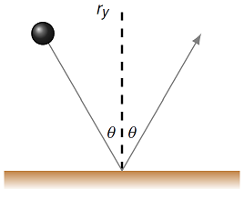
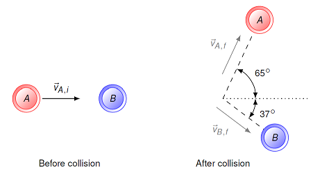
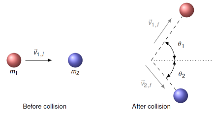

Two-dimensional collisions¶
Overview¶
Up to this point, we have only talked about collisions along a line (1D collisions). There, we saw how to use the coefficient of restitution in the center of mass (CM) frame, along with the equations of relative motion, to find the results of a collision in the lab frame. These 1D collisions obey conservation of momentum, so this gives us another perspective on the process.
The question now is, how to extend this beyond colliding objects moving on the same line. These will be “glancing” collisions, where the two objects do not hit along the line connecting them, but instead “off to the side”. This will result in a force on each object accelerating them (for an instant!) in a different direction. For example, in the picture below, two spheres moving along the same line collide, but they do so such that the point of collision is not along the line they move. Thus, the two forces also point off at an angle. Remember that the forces give the directions of the acceleration, not the final velocities of the spheres!

Our plan for this lesson is the following. First, we will use the scalar product to help us extend what we did with 1D collisions to find the final velocities of two objects. Building off of this, we will program the physics of 2D collisions into a vPython simulation, where we have moving disks inside of a square box. Then, we can show that momentum is still conserved in these collisions. Finally, we will see how to use conservation of momentum to solve generic problems of 2D collisions.
Here are the objectives for this lesson:
Explain how to use the scalar product to find the final velocity of an object after a 2D collision.
Use a procedure or function in Python to carry out part of a program.
Calculate the unknown mass or velocity of an object experiencing a collision in two dimensions using conservation of momentum.
2D collisions in the CM frame¶
An imaginary wall¶
When we dealt with 1D collisions – where the initial and final velocities were along the same line – we used the coefficient of restitution \(\epsilon\) to measure the “springiness” of the collision (or its elasticity). Then, in the CM frame, we could define the final velocities of the two colliding objects \(m_1\) and \(m_2\) using
However, these equations do not quite work when you have glancing collisions. These collisions give final velocities that are not along the same line as the initial velocity, so \({\vec v}_i\) and \({\vec v}_f\) are not proportional as they were in 1D collisions. We can salvage something from this, though, since the speeds will be proportional! Let’s build up to this conclusion, one step at a time.
Hopefully, you remember from Lesson 08 (linear momentum and Newton’s laws) that if a ball hits a wall, the change in the ball’s velocity is perpendicular to the wall; this was one of the examples of that lesson.

In that example, I snuck something past you – the result assumes that the collision is elastic, i.e. that \(\epsilon = 1\)! This came from the fact that the ball’s speed remained the same, just that the velocity changed directions. If the final speed had been less than the initial speed, then \(\epsilon < 1\). However, it gets more complicated to assume inelastic collisions, so let’s stick with elastic collisions.
Now let’s consider the case of two balls colliding, while looking in the CM frame. If I draw the collision as shown below, you can see that from the viewpoint of each of the colliding balls, it looks just like it has struck a wall.

Suppose we define the \(y\) axis to be the vertical direction in this picture, with the \(+x\) direction to the right. Thus, each ball experiences a force along the \(y\) axis, and thus, this is the direction of their changes in velocity. Since we are assuming that the collision is elastic, then the initial and final velocities of the bottom mass \(m_1\) are given by
Note it is only the \(y\) component of the velocity that changes directions. This links up with the fact that the force on this mass is only in the \(y\) direction:
A similar idea happens with the second mass, with only the \(y\) component of the velocity changing (from negative to positive, in this case).
The general case¶
To make this more general, though, let’s write the same velocities, but now in terms of parallel and perpendicular directions. Here, we think of an imaginary wall between the two spheres, so we can use our intuition from the collision of the ball and the wall from our previous example. Therefore “perpendicular” means towards or away from this wall, and “parallel” means along this wall.

This gives that
since \({\hat e}_\perp = - {\hat y}\), so that the change in velocity is only in the perpendicular direction:
How do we find \(v_\perp {\hat e}_\perp\)? Well, the perpendicular direction (remember, this is perpendicular to the imaginary “wall” between the two spheres) points along the line between the centers of the two spheres. Thus, the way we have drawn it above, \({\hat e}_\perp\) points along the same line as the vector \({\vec r}_1 - {\vec r}_2\) between the two spheres. This is shown in the picture below. The vectors \({\vec r}_1\) and \({\vec r}_2\) are the position vectors of the sphere centers, measured from the origin \(O\). The vector
is the relative position vector pointing from mass 2 to mass 1.

Thus, the unit vector \({\hat e}_\perp\) is the vector in the same direction as \({\vec r}_{12}\), but with a unit magnitude. Remember this is found by taking the vector \({\vec r}_{12}\) and dividing by its magnitude.
So, once we find \({\hat e}_\perp\) using the position vectors of the two spheres, we can find \(v_\perp {\hat e}_\perp\) using the scalar product. Remember that, if
then taking the scalar product of this initial velocity with the unit vector \({\hat e}_\perp\) will give
so that
Notice what is going on with the right-hand side: the part inside the parentheses gives the scalar velocity component \(v_\perp\), while the unit vector \({\hat e}_\perp\) at the end gives the direction of this change in velocity.
The perpendicular unit vector in vPython¶
It might be a good time to see all of this math in action, so let’s create the situation above, where we have two spheres touching, and find the unit vector \({\hat e}_\perp\). Then we can use this unit vector to find the direction at one sphere, away from the other!
First, we need to import some vPython modules to make everything work. Remember that you saw the module norm in Lessons 06 (vector magnitude and direction) and 07 (projectile motion); this takes a vector A in vPython and finds the unit vector norm(A) in the same direction as A.
from vpython import arrow, canvas, color, norm, sphere, vector
Now you will build off the skeleton code in the cell below to work through the math we did above.
Problem: Complete the code in the cell below, so that it shows two spheres, along with two arrows, each of which is at the center of one sphere and points away from the other. To do this, you need to perform the following steps:
First, you need to create two spheres,
redBallandgreenBall, that have a radiusBALL_RADIUSas defined. Uncomment the appropriate lines, and defineredBall.posandgreenBall.posso that the two spheres are just touching. You should do this only using the variableBALL_RADIUS, along with the necessary zeros!The vector
relPosrepresents the relative position vector \({\vec r}_{RG} = {\vec r}_R - {\vec r}_G\), with \({\vec r}_R\) and \({\vec r}_G\) giving the positions ofredBallandgreenBallyou just defined. Uncomment the assignment ofrelPos, and write in the necessary code to find \({\vec r}_{RG}\) in terms ofredBall.posandgreenBall.pos.Once you define the relative position vector
relPos, the code for finding the unit vector \({\hat e}_\perp\) in the same direction is already in the cell. You may want to write a statement printingperpUnit, to make sure it is sensible.Finally, you need to create the two arrows
redPerpandgreenPerp. The arrowredPerpis a unit vector with position at the center ofredBall, and pointing away fromgreenBall. Uncomment the line definingredPerp, and write in the appropriate code forredPerp.posandredPerp.axis. This should use onlyredBall.posandperpUnit.Do the same thing for
greenPerp. Remember that this arrow should point in the opposite direction asredPerp!
Problem: Change the positions
redBall.posandgreenBall.pos, so the spheres are still touching, but the line between them points in a different direction. Do your arrowsredPerpandgreenPerpstill point away as before?
canvas()
# Definition
BALL_RADIUS = 0.3
# Create two spheres
#redBall = sphere(pos = vector(#####), radius = BALL_RADIUS, color = color.red)
#greenBall = sphere(pos = vector(#####), radius = BALL_RADIUS, color = color.green)
# Find relative position vector r_RG = r_R - r_G
#relPos =
# Find perpendicular unit vector e_perp by finding
# unit vector along direction of vector relPos
perpUnit = norm(relPos)
# Draw unit vectors at center of each sphere
#redPerp = arrow(pos = #####, axis = #####, shaftwidth = 0.1)
#greenPerp = arrow(pos = #####, axis = #####, shaftwidth = 0.1)
2D elastic collisions in vPython¶
Let’s now look at this these 2D collisions in vPython. First, we need to import the usual modules.
from vpython import arrow, canvas, color, dot, mag, norm, rate, sphere, vector
We can put the necessary code for checking collisions in its own separate function checkCollision(). This is similar to code we have seen before: if the objects are too close together, we use relative motion to go to the CM frame, find the new velocities in that frame, then return back to the lab frame. However, we are adding in the ideas from above, using the “imaginary wall”, to figure out the final velocities of each object. So let’s go through this in detail. You should compare the description I am about to give to the code in the cell below, to make sure you know how everything matches up.
The first thing to do is check if the two objects are close enough to collide. This
min_distancewould be twice the radius for two spheres, for example. If the objects do not collide, then the logical test in theifstatement is false, and the procedure does nothing.Now, suppose the objects do collide. Remember from Lesson 09 (center of mass and collisions) that we need to be in the center of mass (CM) frame in order to use the coefficient of restitution. Thus, using the definition of \({\vec v}_{CM}\) from Lesson 09, we define
CM_vel.Using the relative motion equations (from Lesson 10), we can define the velocities
obj_1_CM_init_velof each object before the collision in the CM frame.The next step is to use the imaginary wall idea from above. We define the unit vector
unit_perpthat points from objectobj2towardsobj1. This is the unit vector \({\hat e}_\perp\) discussed previously. Then, we saw that
so that
Finally, using \(v_\perp = -({\vec v}_{1, i} \cdot {\hat e}_\perp)\), we have an equation for the final velocity of object 1:
This is given in vPython by the definition of obj1_CM_final_vel. A similar logic is used to define obj2_CM_final_vel, just changing the initial velocity appropriately.
5. This gives the final velocities of each object in the CM frame; again using relative motion and the CM velocity, we can find the new velocities of each object in the lab frame. This is the final step of the process.
Make sure you run this cell before the next one, so the computer knows how to deal with collisions.
def checkCollision(obj1, obj2, min_distance):
# Are the two objects within the minimum distance?
if mag(obj1.pos - obj2.pos) <= min_distance:
# Find CM velocity of objects
CM_vel = (obj1.mass * obj1.velocity + obj2.mass * obj2.velocity) / (obj1.mass + obj2.mass)
# Transfer from lab frame to CM frame,
# find CM frame velocities
obj1_CM_init_vel = obj1.velocity - CM_vel
obj2_CM_init_vel = obj2.velocity - CM_vel
# Find new CM frame object velocities,
# using perpendicular unit vector
unit_perp = norm(obj1.pos - obj2.pos)
obj1_CM_final_vel = obj1_CM_init_vel - 2 * dot(obj1_CM_init_vel, unit_perp) * unit_perp
obj2_CM_final_vel = obj2_CM_init_vel - 2 * dot(obj2_CM_init_vel, unit_perp) * unit_perp
# Transfer from CM frame back to lab frame
obj1.velocity = obj1_CM_final_vel + CM_vel
obj2.velocity = obj2_CM_final_vel + CM_vel
Let me make a short note here: this is rather sloppy code. I have used the fact I can get away with some bad programming practices with vPython to keep this code simple, but it is not really how you should write programs. You can ask me about this if you are interested, but if you decide to major in computer science, don’t come back to NAPS and berate me for my bad practices. I warned you.
Now that we have the collision checking procedure, you can run the following cell to show two colliding spheres. Each sphere has an initial position, velocity, and mass. Since the collision checking procedure is generic, you can play around with different masses and velocities, and see what the resulting collisions look like. Some interesting cases are spheres with the same mass or speed, or making the masses very different.
canvas()
# Definitions
RADIUS = 0.4
t = 0
DT = 0.01
MAX_TIME = 3
# Create objects
redBall = sphere(pos = vector(-3, 0.2, 0), radius = RADIUS, velocity = vector(2, 0, 0), \
mass = 2, color = color.red, make_trail = True)
blueBall = sphere(pos = vector(3, -0.2, 0), radius = RADIUS, velocity = vector(-2, 0, 0), \
mass = 2, color = color.blue, make_trail = True)
# Create velocity arrows
redVel = arrow(pos = redBall.pos, axis = redBall.velocity, shaftwidth = 0.1)
blueVel = arrow(pos = blueBall.pos, axis = blueBall.velocity, shaftwidth = 0.1)
# Evolution loop
while t < MAX_TIME:
rate(100)
# Check collisions using procedure
checkCollision(redBall, blueBall, 2 * RADIUS)
# Update positions
redBall.pos = redBall.pos + redBall.velocity * DT
blueBall.pos = blueBall.pos + blueBall.velocity * DT
# Update velocity vectors
redVel.pos = redBall.pos
redVel.axis = redBall.velocity
blueVel.pos = blueBall.pos
blueVel.axis = blueBall.velocity
# Update time
t = t + DT
Problem: Does the code in the last cell work when the two spheres are not moving along the same line? You should think about what it means to say that the code “works”!
Problem: Does the code work if the spheres collide in three dimensions?
Calculations for 2D collisions¶
From the computer to the written page¶
This is a good point to collect everything we have done so far, and relate it to what is coming next. By thinking of the collision of two objects using the idea of an imaginary “wall”, we can find the final velocities of the objects after the collision. We should check that this collision conserves momentum; let’s reuse the picture of the two spheres to see this.
Since this is in the CM frame, we have that the total momentum is zero, or
Writing this out in terms of the masses and initial velocities, we have
Combining the coefficients of the same unit vector, this is
Now remember what happens during the collision, seen in the CM frame. The parallel velocity components \(v_{1, ||}\) and \(v_{2, ||}\) are unaffected by the collision, just like the squash wall when it hit the wall. So, if the parallel momentum component was zero before the collision, it will be zero after. For the perpendicular parts, the collision just switches the signs of each of these – the objects move away from each other, rather than towards each other. Since both components switch signs, then if the perpendicular momentum component was zero before the collision, flipping the signs of both perpendicular velocity components will not change that.
That is what occurs in the CM frame, but what about the lab frame? Do we, as observers watching this process, see conservation of momentum as well? The answer is yes! Since the center of mass velocity is constant before and after the collision, the total momentum of the system is the total mass times that CM velocity (that is how we defined CM velocity in the first place!). So everything works out.
These are all the details of how collisions work, when thought of in terms of the relative motion of the two objects. However, since momentum is conserved throughout the collision, it is frequently more useful to just apply that idea to calculate unknown quantities. But it is always useful to bore down a bit, and understand the details of just why it all works. We will see this collision model again in Lesson 17 (fluids), when we use it to simulate the pressure of a fluid on the walls of its container. Thinking in terms of molecules as elastic spheres was crucial in developing a physical theory for gases.
Next, let’s work through two example problems of conservation of momentum for 2D collisions.
Example: Find final speeds¶
The drawing below shows a collision between two pucks on an air-hockey table. Puck A has a mass of 23.0 g and is moving along the \(x\) axis with a speed of 5.50 m/s. It makes a collision with puck B, which has a mass of 63.0 g and is initially at rest. The collision is not head-on. After the collision, the two pucks fly apart with the angles shown in the drawing. The final speed of puck A is 3.38 m/s. Find the final speed of puck B (in m/s).

To solve this problem, or any collision problem, our go-to method is momentum conservation. Thus, we start with the fact that the total momentum of the two-puck system stays the same before and after the collision.
If we write out what this means in terms of the momenta for pucks A and B, we have
Using \({\vec p} = m {\vec v}\) gives
Puck B is not moving before the collision, so \({\vec v}_{B, i} = 0\).
Now, to solve this vector equation, we need to break it up into its \(x\) and \(y\) components. Remember that this is the same as taking the scalar product of the conservation of momentum equation with \({\hat x}\) for the \(x\) component, and similarly for the \(y\) component. Since there is no motion in the \(z\) direction, the \(z\) component of the total momentum is zero. This gives the two component equations
Puck A is chosen to move along the \(x\) axis before the collision, so \(v_{A, iy} = 0\). The figure shows the two directions for the final velocities; also, we know the final speed of puck A, and we are looking for the final speed of puck B. So it makes sense to use some trigonometry here, instead of writing the equations in terms of the velocity components. Using the vector diagrams

we get that
Notice that the \(y\) component of the final velocity \({\vec v}_{B, f}\) is negative, so there is a corresponding minus sign in that equation.
We are solving for the final speed \(v_{B, f}\), which appears in both equations. Everything else in both equations is known, though, so we can really just pick one of the two, and solve for the unknown speed. Using the \(y\) equation, for example, gives
I have grouped together like quantities in the last equation. From this, we can easily see that if the masses have the same units, then it doesn’t matter what they are, since they cancel out. Similarly, the units we use for \(v_{A, f}\) will be the same as those for the final answer \(v_{B, f}\). Thus, we don’t have to convert from grams to kilograms when substituting here. In addition, we can see what happens if one mass is, say, four times the other, or the initial speed of puck A is halved. Algebraic equations can help answer questions like this easily without having to recalculate the entire problem.
Plugging in the given values gives \(v_{B, f} = 1.86\) m/s.
Example: Smashing particles¶
The drawing below shows a collision between two particles. The red particle has a mass of 200. g and is initially moving along the x-axis with a speed of 5.00 m/s. The blue particle has twice the mass of the red one and was initially at rest. After the collision, the red particle moves off with a velocity of 4.00 m/s at an angle of 54.9\(^\circ\) CCW from the +x-axis. What is the speed (in m/s) and direction (\(\theta_2\), or the angle CW from \(+x\) axis) of the blue particle after the collision?

The initial setup of this problem is much like the last example – we set up the conservation of momentum equations for the situation, making them particular for this situation. Thus,
The vector \({\vec p}_{2, i} = 0\), since the second particle is initially at rest. Now we reach the point where we use a slightly different strategy than the last example. There, we knew the angle for puck B, so we could use trigonometry to write the momentum equations in terms of the unknown final speed \(v_{2, f}\). Here, though, we don’t know either the final speed or direction of the second particle. We could still use trigonometry as before, but if you try it, it can get a little messy. There is a smarter method, which is to write the unknown velocity in terms of its components, rather than its magnitude and direction. I can still write the final velocity for the first particle, using the known speed and direction. This gives the two equations
These can be solved for the unknown velocity components as
As we would expect, \(v_{2, fy}\) is negative, since it moves downward. As the previous problem, I have written the masses separately from the rest. We have that \(m_1 / m_2 = 0.500\), since the blue mass \(m_2\) has twice the mass of the red one, so we didn’t even need to know the value of \(m_1\)!
Plugging in the given values, we calculate the components to be \(v_{2, fx} = 1.350\) m/s, and \(v_{2, fy} = -1.636\) m/s. Now, we can use the Pythagorean theorem to find the final speed, and the inverse tangent to find the direction. This gives a speed of 2.12 m/s, and an angle \(\theta_2\) (as given in the figure above) of \(50.5^\circ\).
Summary¶
Before this lesson, we had talked about collisions and momentum conservation for 1D collisions. That featured the case where the point of collision was on the same line as the motion of the objects. Now, we have seen what happens when this is not true, for glancing collisions of two objects. This naturally leads to 2D motion after the collision. We have seen how this process works in two ways. The first was to focus on the collision itself, with a coordinate system of unit vectors \({\hat e}_\perp\) and \({\hat e}_{||}\), based on the line between the two objects when they collide. We used this to find the final velocities of the objects, and constructed a vPython simulation. We will see the latter again as a model of a fluid in Lesson 17. Using this as another proof that conservation of momentum holds for these collisions, we then considered two example problems of solving analytically for the final velocities.
After this lesson, you should be able to:
Explain how to find the final velocities of an object after an elastic 2D collision.
Explain how to use procedures and functions in Python.
Apply conservation of momentum to a 2D collision to solve for the unknown masses or velocities.